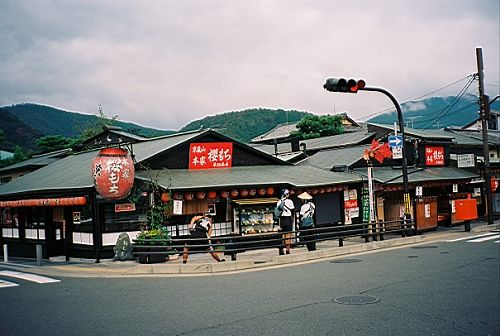
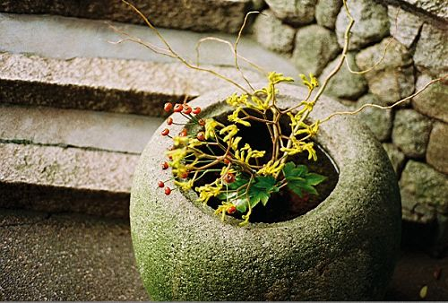

迟来的胶片 @ Sep 11, 2011
Shot by Chen wenwen
FUJI Klasse-W+FUJI Film
在网上搜了下FUJI Klasse-W，发现评测少，出片少。Klasse-W国内用的人不多吗？看了问问拍摄的景德镇胶片的效果，激动+兴奋，促使我向胶片领域迈进了一步。看那些胶片的照片，虽然有些只是简单的静物照，但那种沉着的色彩与层次感还是会感染到我。这是在Flickr上所有人用Klasse-W拍摄的照片，有些还蛮惊艳的。
@June,2011


@Nov.,2010

以下照片为CONTAX T2拍摄，她已出售这款相机。





13 Responses to “迟来的胶片”
2011-09-11
好看啊，我说人。那张门口收费的呢？
2011-09-11
我更喜欢在门外拍摄的那张~
2011-09-12
看到京都的岚山！
2011-09-12
拍的很是不错。而且，冲洗的技术也不赖！想起抽屉里还有十几卷胶片，彩色黑白的都有，还是出来之前的储备。不知道还能被咔嚓不？改天翻出来试试。
2011-09-13
出来之前。。。出国前好吧，不知道的没准儿误会了。那胶卷是不是要过期了？话说我也整了一台胶片机，等你以后鉴定，呵呵，祝中秋快乐。
2011-09-15
胶片对光线的包容宽泛，色彩比数码的好。
2011-09-16
搞的跟专业的似的
2011-09-18
frank，有病呀！
2011-09-18
我很幸运，不靠这个专业吃饭，哈哈哈哈哈~
2011-09-19
Nice photos! I like your point of view! :)
2011-09-20
第一张照片中穿的衣服好喜欢呐！真心想知道是什么牌子的
2011-09-20
MUJI的衬衫。
2011-09-21
最后几张让我感觉有种沉静的力量
Leave A Reply
存档只读，评论已关闭。